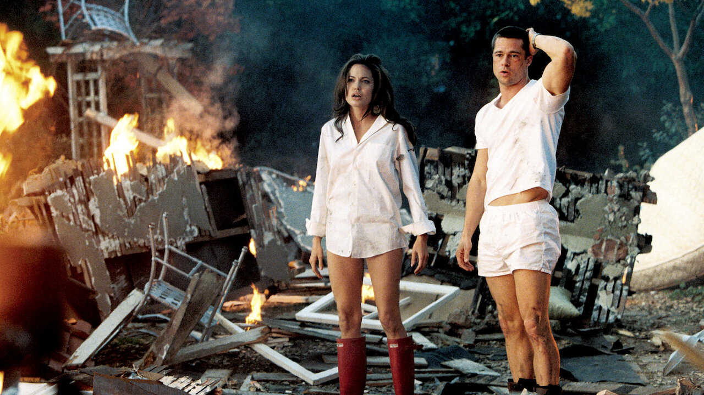
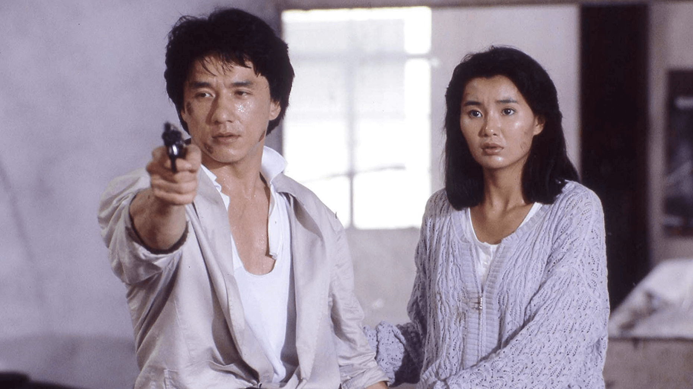

Mr. & Mrs. Smith
2005 - Action, Komödie, Thriller

John und Jane Smith führen eine ganz normale Ehe in der Vorstadt – bis beide herausfinden,
dass der jeweils andere ein Profi-Auftragskiller ist. Als ihre Agenturen ihnen den Auftrag
geben, sich gegenseitig zu eliminieren, beginnt ein explosives Katz-und-Maus-Spiel zwischen
den Eheleuten.
- Regie: Doug Liman
- Besetzung: Brad Pitt, Angelina Jolie
- Bewertung: 6,5 / 10 (590.5K Stimmen)
- Laufzeit: 120 min
- FSK: PG-13
Police Story
1985 - Action, Komödie, Krimi

Kevin Chan (alias Jackie) ist ein Hongkonger Polizist, dem es fast im Alleingang gelingt,
einen mächtigen Drogenboss zu verhaften. Doch der Kriminelle sinnt auf Rache und beschuldigt
Kevin des Mordes. Kevin muss seinen Namen reinwaschen – und gleichzeitig sein Leben sowie
seine Freundin schützen.
- Regie: Jackie Chan
- Besetzung: Jackie Chan, Leung Siu, Fung Woo
- Bewertung: 7,5 / 10 (47.1K Stimmen)
- Laufzeit: 101 min
- FSK: PG-13